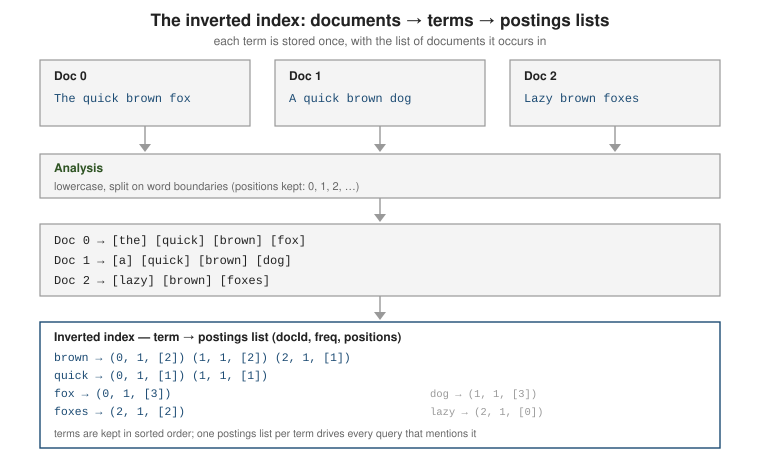
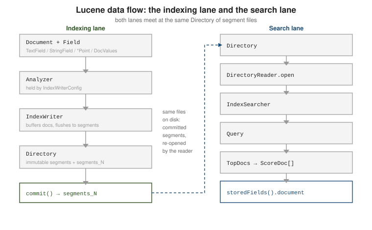

Architecture & data flow
|
This content was generated with the assistance of AI and should be verified against the official documentation before being relied on in production. |
A Lucene index is a directory of immutable segment files, written by an IndexWriter and read
through a point-in-time DirectoryReader. This page describes the on-disk model, the pluggable codec
that defines the file formats, and the two class chains — one for indexing, one for searching — that meet at the Directory.
The index: a Directory of immutable segments
An index is one Directory holding one or more
segments. A segment is a complete mini-index over a subset of the documents, and once written it is
never modified — only merged away or deleted. At its core each segment holds an inverted index:
the analyzed terms, and for every term the list of documents that contain it (the postings list,
with frequencies and positions).

Each segment is a set of files sharing a name prefix (_0, _1, …), one file per data structure. Formats that
are versioned by the codec carry that version in the name, so a segment written by Lucene 10.0.0 contains names
such as _0_Lucene912_0.doc (the postings format) and _0_Lucene90_0.dvd (the doc-values format):
| Files | Structure |
|---|---|
|
Term dictionary: the sorted terms ( |
|
Postings: which documents contain a term with their frequencies ( |
|
Field infos: every field name in the segment with its index options, doc-values type and point dimensions. |
|
Stored field values ( |
|
Doc values — the columnar per-document values used for sort, facet, and function scoring. Skip-index data adds |
|
BKD trees for point fields (numeric and geo range search). |
|
Term vectors (per-document term lists, used by some highlighters). |
|
Norms (per-field length normalization for scoring). |
|
Nearest-neighbour vector data for |
|
|
|
Compound file: all of a small segment’s files packed into one (the default for freshly flushed segments, see Indexing & merge policies). |
|
Live-docs bitset — deletions are recorded here, not by rewriting the segment. |
Deletes and updates never edit a segment in place: a delete flips a bit in .liv, and an updated
document is a delete plus a fresh add in a new segment. Space is reclaimed only when
merges rewrite several segments into one.
Reading the index from the inside
The easiest way to make the segment model concrete is to build the book catalog with compound files turned off and
merging disabled, then list the directory after each step. The listing below is the real output of that program
on Lucene 10.0.0 (file names are abbreviated by dropping the repeating _0 / _1 prefix where it is obvious):
IndexWriterConfig cfg = new IndexWriterConfig(new StandardAnalyzer());
cfg.setUseCompoundFile(false); // show the individual files
cfg.setMergePolicy(NoMergePolicy.INSTANCE); // keep every segment we create
try (IndexWriter w = new IndexWriter(dir, cfg)) {
for (int i = 0; i < 4; i++) w.addDocument(Catalog.toDoc(Catalog.BOOKS.get(i)));
w.flush(); // first four books become segment _0
w.commit(); // writes segments_1
for (int i = 4; i < 8; i++) w.addDocument(Catalog.toDoc(Catalog.BOOKS.get(i)));
w.commit(); // second flush: segment _1, then segments_2
w.deleteDocuments(new Term("isbn", "9780134685991"));
w.commit(); // the delete is recorded in _0_1.liv, then segments_3
}after open : write.lock
after flush #1 : _0.fdm _0.fdt _0.fdx _0.fnm _0.kdd _0.kdi _0.kdm _0.nvd _0.nvm _0.si
_0_Lucene90_0.dvd _0_Lucene90_0.dvm
_0_Lucene912_0.doc _0_Lucene912_0.pos _0_Lucene912_0.psm
_0_Lucene912_0.tim _0_Lucene912_0.tip _0_Lucene912_0.tmd write.lock
after commit #1 : (the same files) + segments_1
after commit #2 : the _0 files, the same set for _1, segments_2
after delete+commit : the _0 and _1 files + _0_1.liv + segments_3generation=3 segments=2 totalMaxDoc=8
_0 codec=Lucene100 maxDoc=4 delCount=1 delGen=1 files=19
_1 codec=Lucene100 maxDoc=4 delCount=0 delGen=-1 files=18
after forceMerge(1): _2.* (one new segment, 7 live documents) segments_4
CheckIndex clean=true segments=1Several facts of the model are visible there. A flush writes a complete segment, one file per structure, and
nothing refers to it until commit() writes segments_N. The delete did not touch the data files of segment _0 at all: it
added a .liv file whose name carries the delete generation (_0_1.liv, delGen=1), and the segment reports
delCount=1. The merge produced a brand-new segment _2 holding the seven surviving documents — the deleted
book is physically gone — and, because the new commit segments_4 no longer references _0 and _1, Lucene
deleted their files. Notice too that write.lock is created when the writer opens and is still there after it
closes: the file is only a lock target, never a flag (see
Directories & storage).
Inside one segment: the inverted index
Reading the postings of the title field straight from the two segments shows what the "inverted index" is. For
every term the segment stores its document frequency, its total term frequency and, per document, the frequency
and positions. The numbers below are real (document ids are global, that is, already offset by the leaf’s
docBase):
leaf ord=0 docBase=0 maxDoc=4 leaf ord=1 docBase=4 maxDoc=4
segment 0: 9 terms, docCount=4 sumTotalTermFreq=12
java df=3 ttf=3 0:1@1 1:1@2 2:1@0
in df=2 ttf=2 2:1@2 3:1@1
lucene df=1 ttf=1 3:1@0
action df=1 ttf=1 3:1@2
segment 1: 14 terms, docCount=4 sumTotalTermFreq=15
solr df=1 ttf=1 5:1@0
in df=1 ttf=1 5:1@1
action df=1 ttf=1 5:1@2
guide df=1 ttf=1 4:1@3java occurs in documents 0, 1 and 2 (Effective Java, Head First Java, Java Concurrency in Practice) at
positions 1, 2 and 0 of their titles — exactly the "postings list of (doc, freq, positions)" drawn in the figure
above. Two things follow. First, every segment has its own term dictionary, so the term in appears in both
segment 0 and segment 1 with separate statistics; a search visits each segment independently and the
searcher sums docFreq across them (reader.docFreq(new Term("title", "java")) returned 3 for the whole
reader). Second, document ids are segment-local numbers added to docBase to get the reader-wide id, which is
why they are not stable across merges: after the merge above, the seven survivors were renumbered 0 to 6.
Generations and commits
The file segments_N (the segment infos, class SegmentInfos) lists the segments that make up one
commit — a durable, consistent point-in-time view. N is the generation: every commit writes a
new segments_N with a higher number, and a DirectoryReader opened on the directory reads the
highest one. IndexWriter.commit() fsyncs the segment files and then the new segments_N; until
then, new segments are visible only to a near-real-time reader (below), not after a crash.
// Inspect the latest commit without opening a full reader.
// https://lucene.apache.org/core/10_0_0/core/org/apache/lucene/index/SegmentInfos.html
import org.apache.lucene.index.SegmentInfos;
import org.apache.lucene.store.Directory;
import org.apache.lucene.store.FSDirectory;
import java.nio.file.Path;
try (Directory dir = FSDirectory.open(Path.of("/var/data/books-index"))) {
SegmentInfos infos = SegmentInfos.readLatestCommit(dir);
System.out.println("generation = " + infos.getGeneration()); // the N in segments_N
System.out.println("segments = " + infos.size());
System.out.println("total docs = " + infos.totalMaxDoc());
infos.forEach(c -> System.out.println(" " + c.info.name + " codec=" + c.info.getCodec().getName()));
}The pluggable codec
Every file format above is produced by a Codec — an assembly of a PostingsFormat,
DocValuesFormat, KnnVectorsFormat, and the rest. The current default is the Lucene<NN>Codec
class (e.g. Lucene100Codec on the 10.0.x line — each minor release ships its own numbered
default); Codec.getDefault() returns it. Because the codec that wrote a segment is recorded in
its .si file, an index can contain segments written by different codecs at once — which is how
an older segment stays readable after an upgrade.
The numbered default changes between minor releases: Codec.getDefault().getName() printed Lucene100 on
Lucene 10.0.0 and Lucene104 on Lucene 10.6.0, and the per-format file-name infix changed with it
(_0_Lucene912_0.doc became _0_Lucene104_0.doc). Compatibility runs backward only: because each segment names the
codec that wrote it, Lucene 10.6.0 reads segments written by 10.0.0, but 10.0.0 does not ship the Lucene104 codec and
cannot open an index once 10.6.0 has written segments to it. Nothing in application code should depend on the
codec name; the file names matter only when you inspect an index by hand.
// https://lucene.apache.org/core/10_0_0/core/org/apache/lucene/codecs/package-summary.html
// current default codec: https://lucene.apache.org/core/10_0_0/core/org/apache/lucene/codecs/lucene100/Lucene100Codec.html
import org.apache.lucene.codecs.Codec;
import org.apache.lucene.index.IndexWriterConfig;
Codec current = Codec.getDefault(); // e.g. "Lucene100"
System.out.println(current.getName());
// Pin a codec explicitly (e.g. to keep a format stable across a minor upgrade).
IndexWriterConfig cfg = new IndexWriterConfig(analyzer);
cfg.setCodec(current);lucene-backward-codecs supplies the read-only codecs of the previous major version, and Lucene’s
compatibility rule is exactly one major version back: Lucene 10 reads indexes written by Lucene 9,
but not Lucene 8. To move further, run IndexUpgrader once per major hop (it rewrites every segment
with the current codec), or reindex. CheckIndex verifies an index’s structural integrity and can
drop unreadable segments as a last resort.
// One-time upgrade of an index written by the previous major version.
// https://lucene.apache.org/core/10_0_0/core/org/apache/lucene/index/IndexUpgrader.html
import org.apache.lucene.index.IndexUpgrader;
import org.apache.lucene.index.CheckIndex;
import org.apache.lucene.store.FSDirectory;
import java.nio.file.Path;
try (var dir = FSDirectory.open(Path.of("/var/data/old-index"))) {
new IndexUpgrader(dir).upgrade(); // rewrites all segments with the current codec
try (CheckIndex checker = new CheckIndex(dir)) {
CheckIndex.Status status = checker.checkIndex();
System.out.println("clean = " + status.clean);
}
}
// CLI equivalent: java -cp lucene-core.jar org.apache.lucene.index.CheckIndex /var/data/old-index
// https://lucene.apache.org/core/10_0_0/core/org/apache/lucene/index/CheckIndex.htmlSee the Elasticsearch documents & indices page for how a server layers a "logical index" and shards over this same segment model.
The indexing chain and the search chain
Two chains of objects meet at the Directory.

Indexing: a Document is an ordered list of Field objects
(Documents, fields & the capability matrix). An
IndexWriterConfig carries the Analyzer and the other write-time settings; an IndexWriter built
from it and a Directory buffers added documents in RAM, flushes them to a new segment when the
buffer fills, and merges segments in the background.
Searching: DirectoryReader.open(dir) (or .open(writer) for near-real-time) produces an
immutable IndexReader over one commit. An IndexSearcher wraps that reader, rewrites a Query
against it, and returns TopDocs — an array of ScoreDoc (doc id + score). Field values for
the hits come from searcher.storedFields(); see
Retrieving results.
// Both chains, side by side.
// https://lucene.apache.org/core/10_0_0/core/org/apache/lucene/index/package-summary.html
// https://lucene.apache.org/core/10_0_0/core/org/apache/lucene/search/package-summary.html
IndexWriterConfig cfg = new IndexWriterConfig(new StandardAnalyzer());
try (IndexWriter writer = new IndexWriter(dir, cfg)) {
Document d = new Document();
d.add(new TextField("title", "Lucene in the small", Field.Store.YES));
writer.addDocument(d);
writer.commit();
}
try (DirectoryReader reader = DirectoryReader.open(dir)) {
IndexSearcher searcher = new IndexSearcher(reader);
TopDocs hits = searcher.search(new TermQuery(new Term("title", "lucene")), 10);
StoredFields stored = searcher.storedFields();
for (ScoreDoc sd : hits.scoreDocs) {
System.out.println(stored.document(sd.doc).get("title"));
}
}Reader lifecycle and reference counting
An IndexReader is reference-counted. Opening one sets its count to 1; incRef() adds a hold and
decRef() releases one, and the reader closes its files only when the count reaches 0. This lets a
new searcher take over while in-flight searches still hold the old reader. DirectoryReader.openIfChanged(old)
returns a new reader that shares unchanged segment readers with the old one and null if nothing
changed — the basis of SearcherManager, covered in
Near-real-time search.
// Hand a reader to another thread safely: hold a reference, release it in finally.
// https://lucene.apache.org/core/10_0_0/core/org/apache/lucene/index/IndexReader.html
reader.incRef();
try {
IndexSearcher searcher = new IndexSearcher(reader);
searcher.search(query, 10);
} finally {
reader.decRef(); // never close() a shared reader directly
}
// Swap in a fresher view without disturbing running searches.
DirectoryReader refreshed = DirectoryReader.openIfChanged(reader);
if (refreshed != null) {
reader.decRef(); // drop our hold on the old one
reader = refreshed;
}The sharing is observable. The program below opens an NRT reader over a writer holding four documents in two segments, adds a document, and reopens:
openIfChanged: r1 leaves=2 r2 leaves=3 r1.docs=4 r2.docs=5
openIfChanged with no change -> null
closed reader use -> AlreadyClosedExceptionr2 has three leaves: the two old segments are shared with r1 (reference-counted, not reopened) and one new
leaf holds the added document. A second openIfChanged with nothing new returns null, and searching a reader
after close() fails with AlreadyClosedException, which is the failure mode of closing a reader another thread
still uses.
Searching several indexes at once: MultiReader
A MultiReader presents several readers as a single reader, so one IndexSearcher can search indexes that live in
different directories — for example one index per year or per tenant. The leaves of all constituent readers are
simply concatenated and the document ids are offset again. With the first four catalog books in one directory and the
last four in another:
MultiReader: maxDoc=8 leaves=2 docFreq(description:lucene)=3
hits 3=Lucene in Action; 5=Solr in Action; 4=Elasticsearch: The Definitive Guide
r1 alone docFreq=1 r2 alone docFreq=2The statistics are combined: docFreq is the sum (1 + 2 = 3), so idf and therefore scores are computed over the
union, not per index — the same ranking a single combined index would produce. A MultiReader closes its
sub-readers when it is closed, unless you construct it with closeSubReaders=false, and it does not refresh itself:
to see new data you reopen the underlying readers and build a new MultiReader. Searching across separately
replicated indexes with consistent statistics is exactly the problem that distributed search engines solve with a
distributed-frequency phase; see Solr distributed search.
From buffered documents to merged segments
Adds accumulate in an in-memory buffer. A flush (buffer full, an explicit flush(), or a
commit()) turns the buffer into one new on-disk segment. Because every flush makes another segment
and a search must visit them all, the MergePolicy continuously picks small segments and rewrites
them into fewer, larger ones in the background; deleted documents are dropped during the merge. This
flush-then-merge cycle is what
Indexing & merge policies tunes, and it is the
Lucene-level view of Solr’s indexing
internals & performance.
// The MergePolicy is a write-time setting; the default is TieredMergePolicy.
// https://lucene.apache.org/core/10_0_0/core/org/apache/lucene/index/MergePolicy.html
IndexWriterConfig cfg = new IndexWriterConfig(analyzer);
System.out.println(cfg.getMergePolicy()); // TieredMergePolicy(...)
try (IndexWriter writer = new IndexWriter(dir, cfg)) {
// ... bulk load ...
writer.commit();
// Optional one-off consolidation after a load: collapse to a single segment.
// Expensive -- not something to run routinely.
writer.forceMerge(1);
}Related pages
-
Directory implementations & storage — the
Directorythe segments live in and how its files are read. -
Documents, fields & the capability matrix — the
Document+Fieldend of the indexing chain. -
Indexing & merge policies — flush, the
MergePolicy, andIndexWriterConfigin depth. -
Near-real-time search —
openIfChanged,SearcherManager, and NRT readers from the writer. -
Retrieving results —
TopDocs,ScoreDoc, andstoredFields()at the search-chain end. -
Elasticsearch documents & indices — shards and logical indices built over this segment model.
-
Solr indexing internals & performance — the same flush/merge cycle as exposed by Solr.